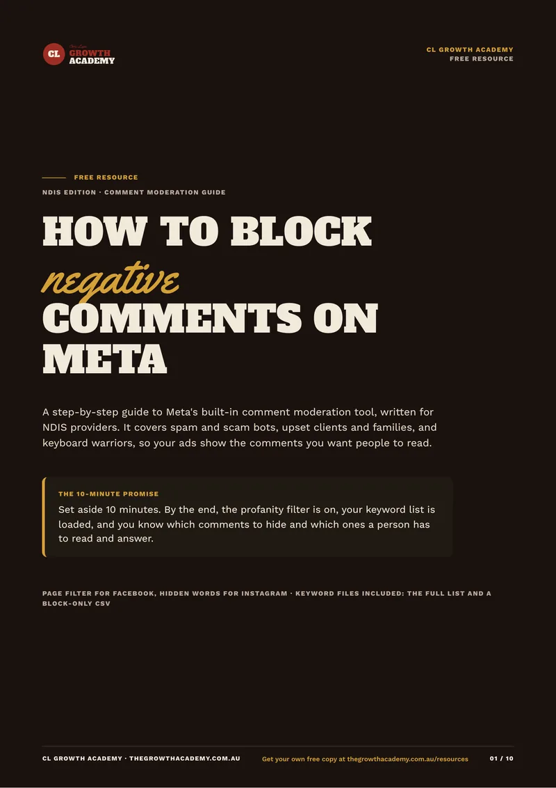
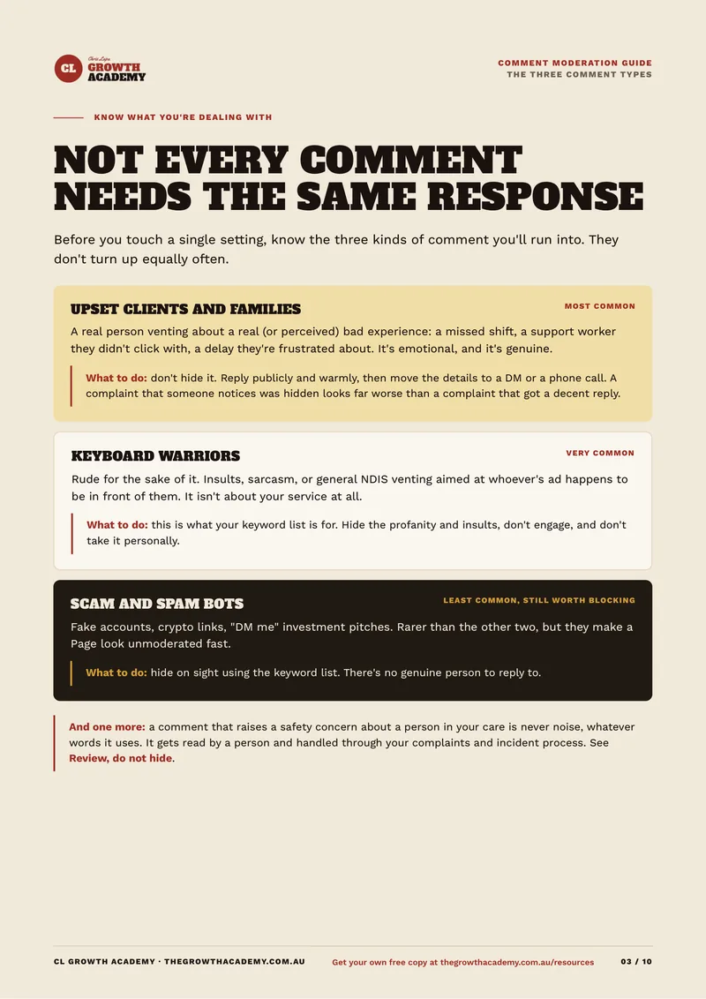

Hide Comments on Facebook Ads: An NDIS Guide and Keyword List
This free list of 247 keywords for NDIS, disability and aged care providers hides spam, scams and abuse on your Facebook and Instagram ads. Load it into Meta's free comment filter in about 10 minutes, and hide single comments in Ads Manager. Upset clients and safety concerns stay visible for a person to answer. No sign-up.

What keywords should an NDIS provider block?
Short answer: block spam and scam phrases, NDIS fraud and rort commentary, and abuse. Never block words a participant or family uses to raise a safety concern, such as abuse, neglect, injury or complaint. Start with the three short lists below, then upload the rest from the free block-only CSV.
General spam and scam phrases: WhatsApp, Telegram, Inbox me, DM me, Message me, Crypto, Investment, Bitcoin, Forex, Guaranteed funding, Prize, Giveaway, Claim now.
Worth adding for NDIS and aged care pages: Hiring now, Job vacancy, Earn from home, Click link in bio, Loan approved, Grant available.
NDIS scam and fraud commentary: Scam, Scammer, Fraud, Fraudulent, Fake, Rip off, Taxpayer, Waste of money, Corruption, Dodgy, Government money, Rorting, NDIS rort.
Genuine critics use some of these words too, so check what gets hidden every month.
The CSV files hold five longer lists:
| List | What it catches | Words |
|---|---|---|
| Financial distress and legal | Insolvency, unpaid wages and legal threats | 28 |
| NDIS fraud and billing scams | Billing fraud talk and "avoid this provider" pile-ons | 38 |
| Regulatory and media commentary | Media and court commentary aimed at the sector | 34 |
| Negative review language | Review-bombing and pile-on phrases | 25 |
| Profanity, insults and slang | Swearing, insults, slurs and Australian slang | 86 |
Every block list, starter lists included, comes to 247 keywords, inside Meta's limit of 1,000. The block-only CSV holds those 247 and nothing else. The profanity list includes slurs and strong language, so it sits in the CSV files only.
Leave broad words like "help", "money" and "support" off the list. Participants and families use them all the time, and you'd hide real enquiries along with the spam.
How do I hide comments on my Facebook ads?
Short answer: to hide one comment, open the ad in Ads Manager, click Edit, then the three dots beside the ad name, More options and Manage Facebook comments, and choose Hide comment. To hide comments automatically, add a keyword list and the profanity filter in your Facebook Page settings. Meta applies both to ads from that Page.
Hide one comment in Ads Manager
- Open Ads Manager and click the Ads tab.
- Find the ad and click Edit below its name.
- In the left-hand column, select the three dots to the right of the ad name, then More options.
- Choose Manage Facebook comments (or Manage Instagram comments, or Manage Threads replies).
- Next to the comment, select the three dots, then Hide comment or Report comment.
You can also like and reply to Facebook comments from the same window, which is the quickest place to answer a genuine enquiry on an ad.
Hide comments automatically from your Page settings
- Open your Page settings. Switch into your Facebook Page, click your Page photo at the top right, then Settings and privacy, then Settings. In the left-hand menu, click Followers and public content.
- Turn on the profanity filter. Switch on "Hide posts and comments with profanity". Meta hides the most commonly reported offensive words and phrases with no list needed.
- Open the keyword list. On the same screen, click "Hide comments containing certain words from your Page".
- Add your keywords, then save. Type or paste them separated by commas. The list takes up to 1,000 keywords, and Meta hides common misspellings, plurals and versions with numbers or symbols without counting them towards the limit.
To load all 247 at once, use the block-only CSV. In "Hide comments containing certain words from your Page", click Options, then Upload from .CSV, choose the block-only file, and save. Upload only the block-only file. The full list also holds the "review, do not hide" words, and uploading it would hide safety concerns.
Meta renames its menus from time to time. If a step looks different, type "profanity" into the settings search.
New keywords apply to new comments. A hidden comment stays visible to the person who wrote it and their friends, and is hidden from everyone else.
For Instagram, add the same words under More, then Settings, then Hidden Words (below "How others can interact with you"), then Manage custom words and phrases.
If your Page uses professional mode, Meta's Moderation Assist can also hide new comments automatically, for example comments with links, images or your custom keywords, or from accounts less than a week old. It sits in your Professional dashboard, under the Engagement tab, then Tools, then Moderation Assist, and covers comments on your Page, your profile and the ads you run.
Which comments should I hide, and which should I answer?
Hide spam and abuse. Answer anything from a real client, family member or person raising a concern.
| Comment | What it looks like | What to do |
|---|---|---|
| Scam and spam bots | Crypto links, "DM me" investment pitches, fake job offers | Hide on sight with the keyword list. There is nobody to reply to. |
| Keyboard warriors | Insults, sarcasm, general venting about the NDIS | Let the filter hide it. Don't engage and don't take it personally. |
| Upset clients and families | A missed shift, a worker they didn't click with, a delay | Don't hide it. Reply publicly and warmly within the day, then move the details to a DM or a phone call. |
| Safety concerns | Neglect, abuse, an injury, the NDIS Commission, a complaint about care | Don't hide it. A person reads it, responds or takes it offline, and follows your complaints and incident process. |
| Genuine enquiries | Questions about your service, your area or how to start | Reply within the day, every time. Keep personal details out of public comments. |

Upset families turn up more often than scam bots. As I put it in a webinar for providers, "the NDIS space is riddled with keyboard warriors". The filter deals with them. It doesn't reply to anyone, and a fast, warm reply to an upset family member does more for your Page than any keyword list.
Should I ever hide a complaint about safety?
No. A comment about neglect, abuse, an injury or the NDIS Commission goes to a person on your team to read and act on, whatever words it uses.
The NDIS Code of Conduct asks providers and workers to promptly raise and act on concerns about the quality and safety of supports, and to prevent and respond to neglect and abuse. Hiding a comment about a safety concern means nobody acts on it, which is a compliance risk. If it comes out later, the hidden comment becomes part of the story.
Keep these words off every block list. The guide calls this list "review, do not hide":
- Abuse, neglect and misconduct: abuse, neglect, mistreatment, exploitation, misconduct, negligence, unsafe, harassment, discrimination.
- Safety and duty of care: injured, injury, duty of care, serious incident, reportable incident, understaffed, untrained staff.
- Money and billing: theft, stealing, overcharging, overservicing, phantom billing. A participant or family member can use these words to report financial abuse.
- Complaints and regulators: complaint, NDIS Commission, ombudsman, police investigation.
When one of these turns up:
- Read it the same day, as part of your daily look at your ads.
- Reply publicly and calmly, without debating the facts, and offer a phone call or a direct message.
- Follow your complaints and incident process. If it describes a reportable incident, your incident process covers notifying the NDIS Commission.
- Screenshot the comment and write down what you did and when.
The full list marks these rows "DO NOT BLOCK", and the block-only CSV leaves them out, so nobody loads them into Meta by mistake.
Where do hidden comments go?
Hidden comments are not deleted. On a computer, open the post, click Most Relevant at the top of the comments, and select Hidden by This Page. You'll see the comments you hid and the ones the profanity filter and your keyword list hid. From there you can unhide anything that should have stayed up and reply to it.
How do I keep the filter working?
Ten minutes sets it up. A few minutes a week keeps it hiding the right comments.
| When | Check |
|---|---|
| Daily | New comments on live ads, especially anything on the review list |
| Weekly | Keyword list and settings unchanged |
| Monthly | Hidden by This Page on each live post |
| Quarterly | New spam phrases added to the list |
If you'd like help running Facebook and Instagram ads for your NDIS business, see how I run social ads for NDIS providers.
Who is this guide for?
Owners, marketing staff and whoever answers the comments at an NDIS, disability or aged care provider running Facebook or Instagram ads. If an agency or an offshore team runs your ads, send them this page and ask them to show you the list they have loaded.
Download the keyword lists and guide
Three files, no sign-up:
- Block-only CSV: the 247 block keywords, ready for Meta's Upload from .CSV.
- Full keyword list (CSV): the block lists plus the "review, do not hide" words, each row labelled, so you can see what to block and what a person must read.
- The 10-page guide (PDF).
FAQ
Is it free with no sign-up?
Yes. All three files download straight from this page. The other resources in the library need one sign-up.
Can you remove comments on Facebook ads?
Yes. In Ads Manager, open the ad, choose Manage Facebook comments, and hide or report each comment. Hiding keeps the comment for your records and hides it from everyone except the person who wrote it and their friends. To hide comments before anyone reads them, use the Page keyword list.
How do I block a word on my Facebook Page?
Go to Settings and privacy, then Settings, then Followers and public content, and click "Hide comments containing certain words from your Page". Add the word and save. Meta hides close spellings of it too.
Does hiding a comment delete it?
No. The comment stays visible to the person who wrote it and their friends, and you can unhide it from Hidden by This Page on the post.
Does the keyword list work on Instagram?
The Page keyword list and profanity filter work on Facebook. Add the same words to Instagram under Settings, then Hidden Words, then Manage custom words and phrases.
How many keywords can I add?
Meta's keyword list takes up to 1,000. The block-only CSV holds 247.
Can I hide a complaint from a family?
You can, but don't. Reply publicly and warmly, then move the details to a DM or a phone call. A comment raising a safety concern goes through your complaints and incident process.
Want help putting this to work?
Book a free growth audit. I'll go through your business with you and pick the first three moves, then you decide whether you want help running them.
Sources
Meta's menus and limits on this page come from Meta's own help pages, checked 15 November 2026:
- How to manage comments on your ads in Meta Ads Manager (opens in a new tab), Meta Business Help Center, checked 15 November 2026
- Block certain words from appearing in comments on your Facebook Page (opens in a new tab), Facebook Help Center, checked 15 November 2026
- Turn the profanity filter on and off for your Facebook Page (opens in a new tab), Facebook Help Center, checked 15 November 2026
- Hide a comment from a post on your Facebook Page (opens in a new tab), Facebook Help Center, checked 15 November 2026
- Manage comments with Moderation Assist on Facebook (opens in a new tab), Meta Business Help Center, checked 15 November 2026
- Hide comments or message requests you don't want to see on Instagram (opens in a new tab), Instagram Help Center, checked 15 November 2026
- NDIS Code of Conduct (opens in a new tab), NDIS Quality and Safeguards Commission, checked 15 November 2026
The keyword lists are CL Growth Academy's own.